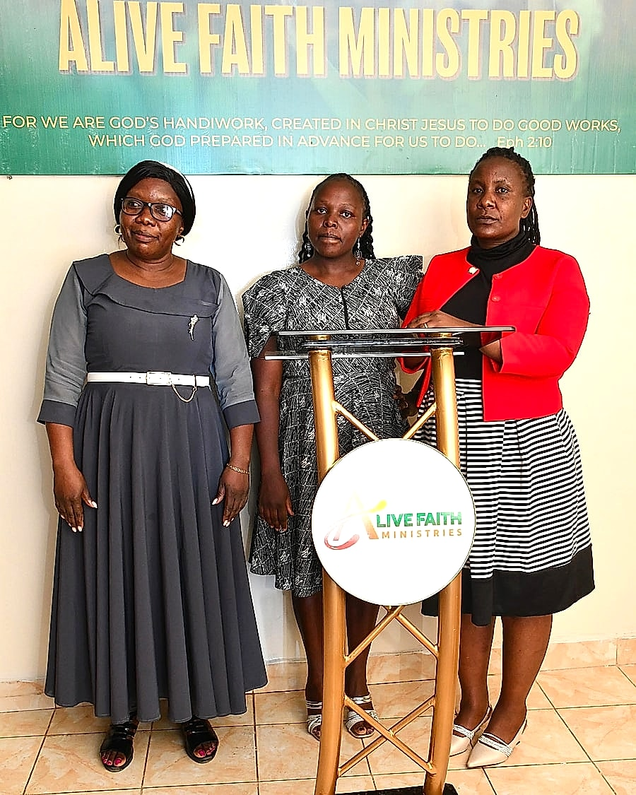
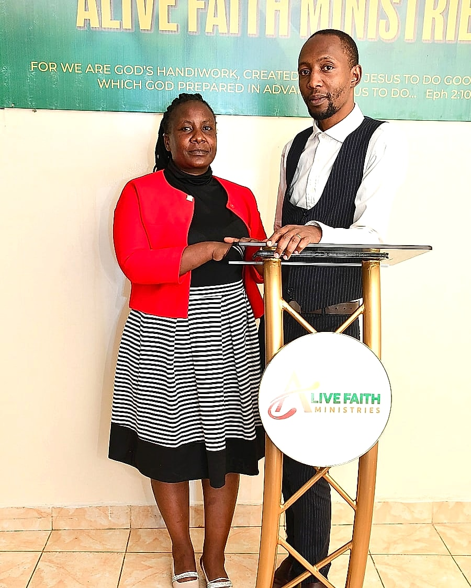
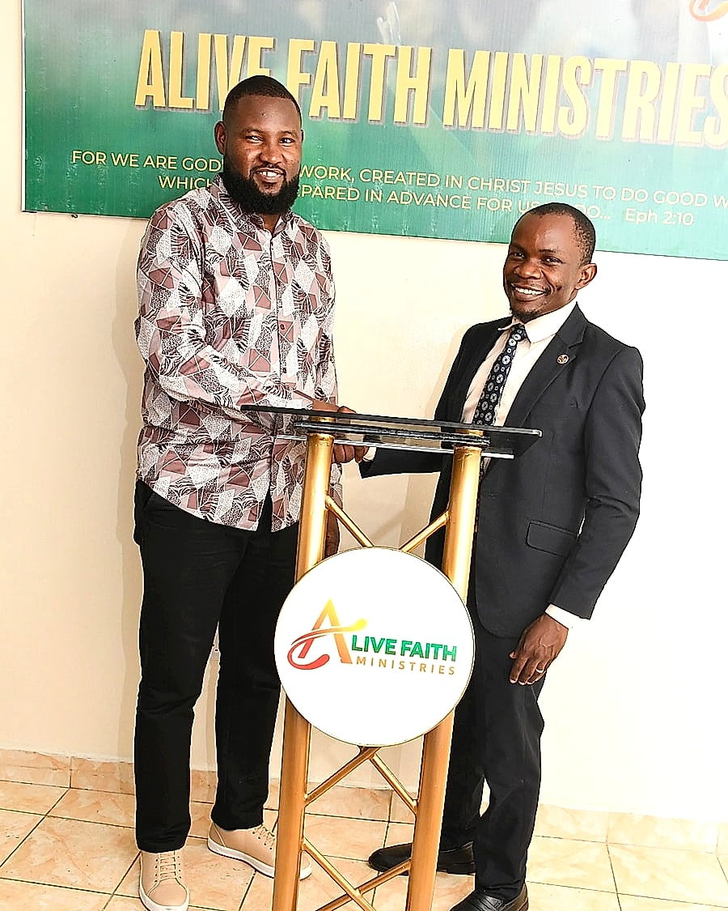

Raised for Fullness in Christ
Experiencing uncompromised faith, transformative grace, and intimate fellowship with the Father.
Alive Faith Ministries was birthed out of a relentless heavenly burden to see sons and daughters of God awakened to their true priestly stature. In a world full of religious conformity and spiritual weariness, our calling is to unveil the unsearchable riches of Christ Jesus, equipping every believer to walk in experiential knowledge, divine authority, and unshakable trust in God.
We believe that salvation is not merely a ticket to heaven, but an immediate introduction into the supernatural life of God on earth. Through revelatory preaching of the Word, fervent intercession, and sincere worship, we cultivate an altar where believers transition from seeking God for things to seeking God for who He is.
Laboring to Inspire Faith
We labor to inspire faith among believers through Spiritual teaching of the word of God, consistent Prayer life and service. Enabling every believer to grow from birth to servanthood capable and mighty to showcase the excellence of God through their life.
Raising Capable Believers
To raise believers that believe God, fear him and capable to fulfill God’s purpose in their life. (Ephesians 2:8-10)
5 Foundational Values
The sacred principles that govern our fellowship, preaching, prayer, and discipleship walk.
Prayer
A community given to consistent, fervent and nourished prayer.
Faith
Inspired by the Faith living, life of God in us as we lead our life.
The Word
The word of God illuminates our life and reveals Christ in us.
Soul Winning
Our greater joy is to see men come to the Faith in Christ Jesus.
Giving
A prosperous and generous giving for charity, for sacrifice and for Worship.
The Believer's Pathway
How we nurture every person from new birth to spiritual maturity and kingdom leadership.
New Birth in Christ
Receiving eternal life through faith in Jesus Christ, washing of regeneration, and new creation identity.
Rooted in the Word
Grounding in foundational apostolic doctrine, understanding righteous standing, and intimacy through prayer.
Holy Spirit Ministry
Discovering spiritual gifts, walking in prophetic sensitivity, and demonstrating supernatural power in daily life.
Priestly Leadership
Advancing the Kingdom in society, mentoring newer believers, and manifesting Christ's love and excellence.
Senior Pastoral Leadership
Alive Faith Ministries Sanctuary
A Welcome from Our Senior Pastors
Welcome to Alive Faith Ministries. We are a family grounded in the unshakeable love of God and the transformative power of His Word. In our sanctuary, you are not a face in the crowd — you are God's deliberate workmanship, created in Christ Jesus for good works.
Our apostolic commission is to shepherd you from spiritual infancy into the full stature and fullness of Christ, walking in righteousness, answered prayers, and kingdom dominion.
Pure Apostolic Truth
Uncompromising revelation of grace, righteousness, and eternal redemption in Christ.
Family Fellowship & Love
A welcoming sanctuary where you are nurtured, empowered, and strengthened.
Fervent Priestly Intercession
Continual prayer cover for your destiny, family, spiritual growth, and breakthroughs.
Ministry Leadership Council
Dedicated shepherds, ministers, and leaders laboring in word, doctrine, prayer, and fellowship.
Senior Pastoral Leadership
Shepherding Alive Faith Ministries with an apostolic burden to awaken believers to their fullness, stature, and divine mandate in Christ Jesus.
Pulpit & Proclamation Ministry
Transmitting life-transforming, revelatory teachings every Friday Hour of Illumination and Sunday Celebration Service.
Pastoral Oversight Council
Preserving doctrinal purity, biblical counseling, and shepherd care across all fellowships, home cells, and sanctuary services.
Associate Pastorate
Leading believers into experiential knowledge of God, spiritual maturity, baptism in the Holy Spirit, and walking in righteousness.
Council of Ministry Elders
Providing wisdom, administrative excellence, and spiritual guidance to ensure the ministry flourishes in integrity and power.

Women's FellowshipDaughters of Destiny
Raising virtuous, prayerful women who build godly families, walk in spiritual authority, and mentor the next generation.

Family & MarriageCouples & Family Ministry
Nurturing marital oneness, godly parenting, and solid kingdom families rooted in mutual love, honor, and covenant grace.
Intercession & Women's Lead
Standing at the altar of prevailing prayer, maternal care, and pastoral counseling for women, youths, and new converts.
Youth & Digital Broadcast
Engaging young minds with uncompromised faith, digital broadcasts, live streams, and creative expressions of worship.

StewardshipCovenant Partnership Desk
Partnering in sacrifice and generosity to advance gospel crusades, sanctuary development, and regional outreach.